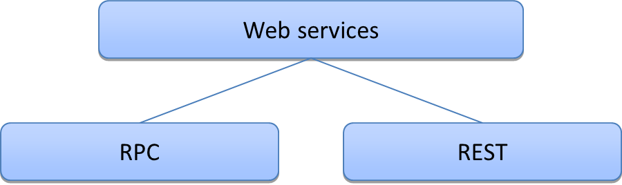

Un service web est :
Il existe 2 grandes familles.

Entre les 2, nous avons des services hybrides tout à fait viables.
XML-RPC est un protocole RPC permettant à des processus s'exécutant dans des environnements différents de faire des appels de méthodes à travers un réseau.
Les processus d'invocation repose sur le protocole HTTP pour le transport et le XML pour le codage des données.
XML-RPC est l'ancêtre de SOAP.
SOAP est un mécanisme RPC basés sur 3 technologies.
Un message SAOP
SOAP peut s'appuyer sur le HTTP comme couche de transport.
Une des motivations initiales est l'interopérabilité entre les plateformes et les languages.
La mise en place d'un service SOAP est relativement complexe.
Le code
service.GetStockPrice("IBM")
Le format XML
POST /InStock HTTP/1.1
Host: www.example.org
Content-Type: application/soap+xml; charset=utf-8
Content-Length: nnn
<?xml version="1.0"?>
<soap:Envelope xmlns:soap="http://www.w3.org/2001/12/soap-envelope"
soap:encodingStyle="http://www.w3.org/2001/12/soap-encoding">
<soap:Body xmlns:m="http://www.example.org/stock">
<m:GetStockPrice>
<m:StockName>IBM</m:StockName>
</m:GetStockPrice>
</soap:Body>
</soap:Envelope>
Le contenu XML de la réponse
HTTP/1.1 200 OK
Content-Type: application/soap+xml; charset=utf-8
Content-Length: nnn
<?xml version="1.0"?>
<soap:Envelope xmlns:soap="http://www.w3.org/2001/12/soap-envelope"
soap:encodingStyle="http://www.w3.org/2001/12/soap-encoding">
<soap:Body xmlns:m="http://www.example.org/stock">
<m:GetStockPriceResponse>
<m:Price>34.5</m:Price>
</m:GetStockPriceResponse>
</soap:Body>
</soap:Envelope>
Un service REST est un service web qui repose intensivement sur le protocole HTTP.
Contrairement a SOAP, REST est une bonne façon de designer un web service et non une spécification.
Le corps de la réponse peut être de n'importe quel format (HTML, JSON...).
Comme pour SOAP, on retrouve une enveloppe, un header et un body sauf que pour les services REST, cette répartition est indissociable du protocole HTTP.
Les services REST ont une interface uniforme : GET, POST, PUT, DELETE...
REST impose un design exigeant. On peut définir une échelle de pureté.
| URI |
| HTTP |
| Navigation |
REST est donc du web semantique pour les clients non humains.
L'équivalent des pages web HTML mais pour des machines.
Le service Amazon S3 (Simple Storage Service) propose des APIs REST et SOAP.
Le service S3 permet de générer des conteneurs (buckets) et des données (objects)
| La liste des buckets | Un bucket | Un objet | |
| URI | / | /{bucket} | /{bucket}/{objet} |
| GET | La liste des buckets | Liste des objets dans un bucket | Les valeurs de l'objet et ses metadata |
| HEAD | - | - | Les metadata de l'objet |
| PUT | - | Création du bucket | Mise à jour de l'objet |
| DELETE | - | Suppression du bucket | Suppression de l'objet |
Une création de bucket
PUT /mybucket HTTP/1.1 Content-Length: 0 User-Agent: jClientUpload Host: s3.amazonaws.com Date: Sun, 05 Aug 2007 15:33:59 GMT Authorization: AWS 15B4D3461F177624206A:YFhSWKDg3qDnGbV7JCnkfdz/IHY=
La réponse
HTTP/1.1 200 OK x-amz-id-2: tILPE8NBqoQ2Xn9BaddGf/YlLCSiwrKP+OQOpbi5zazMQ3pC56KQgGk x-amz-request-id: 676918167DFF7F8C Date: Sun, 05 Aug 2007 15:30:28 GMT Location: /mybucket Content-Length: 0 Server: AmazonS3
Une réponse avec une erreur
HTTP/1.1 409 Conflict x-amz-request-id: 64202856E5A76A9D x-amz-id-2: cUKZpqUBR/RuwDVq+3vsO9mMNvdvlh+Xt1dEaW5MJZiL Content-Type: application/xml Transfer-Encoding: chunked Date: Sun, 05 Aug 2007 15:57:11 GMT Server: AmazonS3 <?xml version="1.0" encoding="UTF-8"?> <Error> <Code>BucketAlreadyExists</Code> <Message>The named bucket you tried to create already exists</Message> <RequestId>64202856E5A76A9D</RequestId> <BucketName>mybucket</BucketName> <HostId>cUKZpqUBR/RuwDVq+3vsO9mMNvdvlh+Xt1dEaW5MJZiL</HostId> </Error>
RESTful web services
Leonard Richardson et Sam Ruby